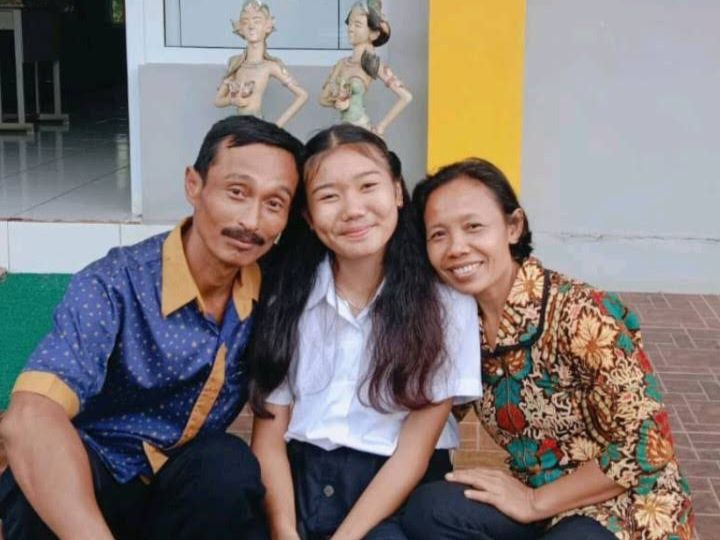

Youtube
Ayat ini sangat memberkati saya,karena seringkali saya khawatir tentang apa yang terjadi di masa depan saya nantinya,kadang saya masih bingung harus gimana,tapi melalui ayat ini,saya dikuatkan,dan mulai tidak khawatir yang berlebihan tentang masa depan. Karena masa depan sungguh ada dan harapan kita tidak akan hilang,jadi harus terus berharap kepada Tuhan.
Ayat ini sangat memberkati saya juga,karena saat kita melakukan segala sesuatu bukan untuk Tuhan dan melakukannya untuk manusia,maka kita akan mudah kecewa,karena manusia seringkali mengecewakan kita,tapi Tuhan tidak pernah mengecewakan kita
Ayat ini mengingatkan saya untuk sabar disaat dalam kesesakan,dan terus bertekun dan berdoa,dan selalu bersukacita dalam pengharapan,disaat ada cobaan dan ujian dari Tuhan , saya selalu ingat ayat ini,dan ayat ini menguatkan saya dalam menghadapi berbagai cobaan dan ujian,dan terus mengandalkan Tuhan dalam segala keadaan.